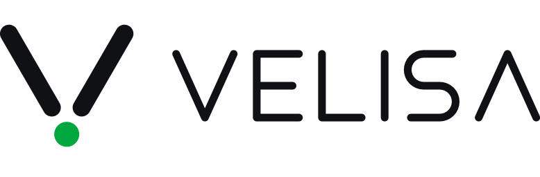

Agent skill · local FFmpeg · 42 tools
Give your coding agent a video editor.
Claude Code, Cursor, Codex or any MCP client edits your footage with local FFmpeg, then checks its own output.
$ npx ffmpeg-skillTake interview.mp4, keep 0:45–3:10 and 5:00–6:30, and make it exactly 60 seconds for Reels.
probe.py interview.mp4measuredcut.py --segments 0:45-3:10,5:00-6:30fit.py --duration 60 --aspect 9:16 --fit cropexport.py --preset reelscheck.py --platform reelsPASSlook.pycontact sheet
final.mp4: 59.98 s, 1080×1920, 30 fps, AAC stereo
The workflow it teachesevery job, in this order
- Probemeasure the real file
- Editlosslessly where possible
- Checkagainst the destination
- Verifylook at the result
Demos
Left is the input. Right is what the command produced.
The two videos run the tools on AI-generated footage; the previews below are generated from synthetic footage. All of it is rebuilt by demos/build.py, so you can make every frame yourself.
fit.py --aspect 9:16 --fit crop --crop-x 0.27Real speech, made vertical: the crop follows the speaker, not the centre. AI-generated footage.silence.py --filler --transcribeTurn the sound on: "er" and "um" play, then they are gone. AI-generated footage.

caption.py --animate pop --karaokeAnimated captions with a karaoke highlight
fit.py --aspect 9:16 --fit crop16:9 reframed to 9:16
silence.py --threshold -35Silence removed, timeline shorter
loudness.py -I -14 --tp -1Waveform before and after normalisation
color.py --to-sdr --tonemap hableHDR10 to SDR
overlay.py --chromakey 0x00b140Green screen onto a generated background
How it works
It stops guessing.
An agent that “knows FFmpeg” still guesses: it assumes a frame rate, picks a codec the container cannot hold, re-encodes a file that only needed a stream copy, and reports “done” without opening the result.
Real files first
Every job starts with
probe.py. The agent decides from the measured duration, fps, resolution, colour and audio layout, not from the file name.Structured tools, not shell strings
Each operation is a script with typed arguments. Nothing runs through a shell, and no filter graph is accepted from the caller.
A contract the agent can read
contract --jsonstates, for every tool, what it takes, what it writes, which FFmpeg components it needs and how the result is verified.Verification after execution
The result is probed, checked against the destination’s spec and, when the picture changed, looked at as a contact sheet.
Local first
No cloud, no API keys, no Python dependencies. Optional speech-to-text runs on an engine you install, and the audio is never uploaded.
Tools
42
tools that do the actual work with ffmpeg / ffprobe.
- Cut & join
- Silence removal
- Fit to duration & aspect
- Captions & karaoke
- Overlays & motion graphics
- HDR → SDR & LUTs
- Audio clean-up & dynamics
- Sync & drift correction
- Multicam
- Loudness
- Delivery checks
- Project rendering
- Batch folders
Built for agents
MCP
Every tool is an MCP tool. A core 12 is listed by default to keep the client’s context small, all 42 with
tools/list · tools/callFFMPEG_SKILL_MCP_FULL=1.Contract
One machine-readable contract describes the whole set: what each tool takes and writes, what it needs from FFmpeg, and how it is checked.
contract --jsonSPEC
Each tool’s input schema is derived from the script’s own argument parser, never written by hand beside it. CI fails if the docs drift.
Self-Producing Execution Contract
Install
One line per agent.
$ npx ffmpeg-skillClaude Code$ npx ffmpeg-skill --cursorCursor$ npx ffmpeg-skill --codexCodex$ npx ffmpeg-skill --allall three$ npx ffmpeg-skill doctorcheck the machine
Needs FFmpeg 6.1+ and Python 3.10+ on your PATH. Works offline. How to install FFmpeg itself on macOS, Linux and Windows is in the README.
FAQ
Questions people ask first
Can I pass raw ffmpeg arguments, or a filter_complex?
Why 42 tools? Isn’t that overkill?
What does “verified” check, and what can it not tell me?
How does ffmpeg-skill compare with Remotion?
Does it encode on the GPU?


On its own, it is a local FFmpeg engine. In Velisa, it is the hands: it cuts, measures and exports, and reports back in JSON. It never decides what to cut.
Velisa →Paper
What Is Verification-Driven Coding?
A Discipline for Not Trusting Generation
Kajiyama, S. (2026). Zenodo · doi:10.5281/zenodo.23720216
Read the paper →